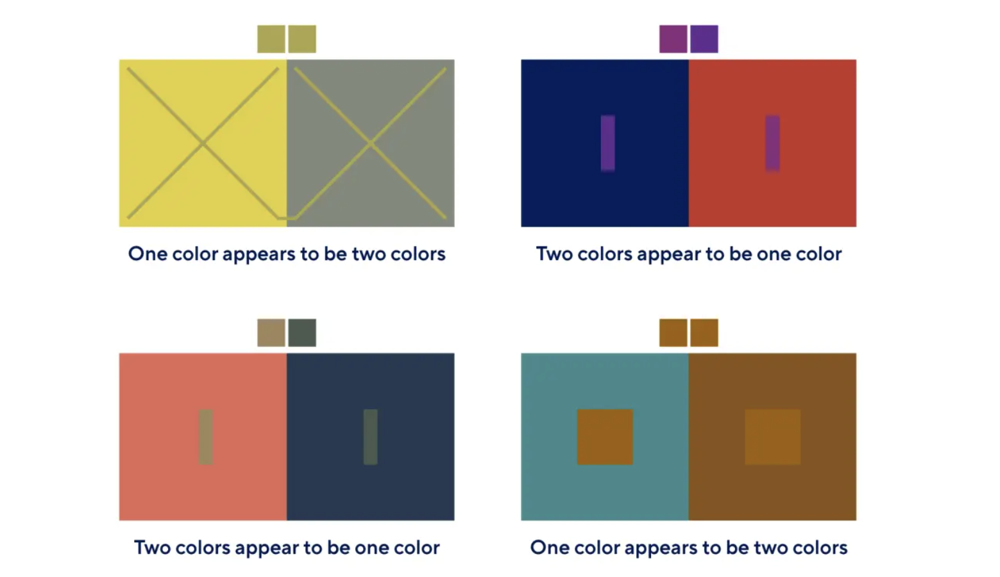
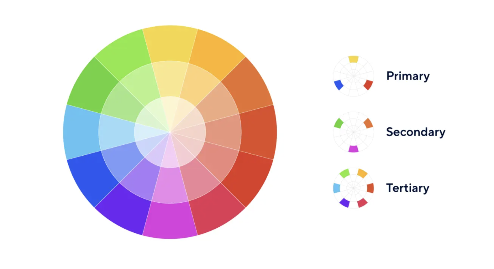
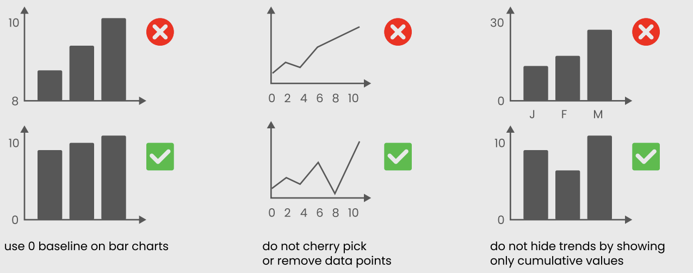
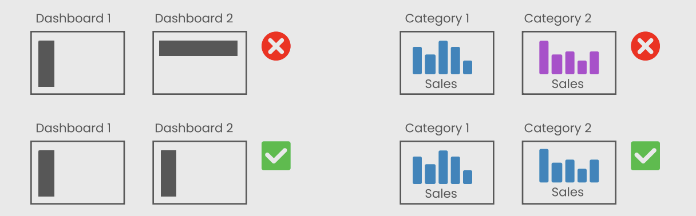
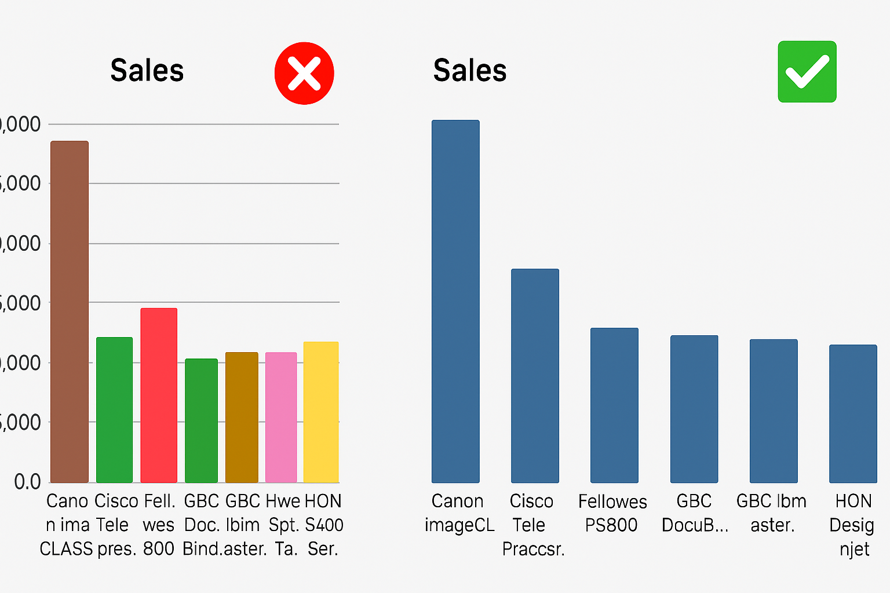
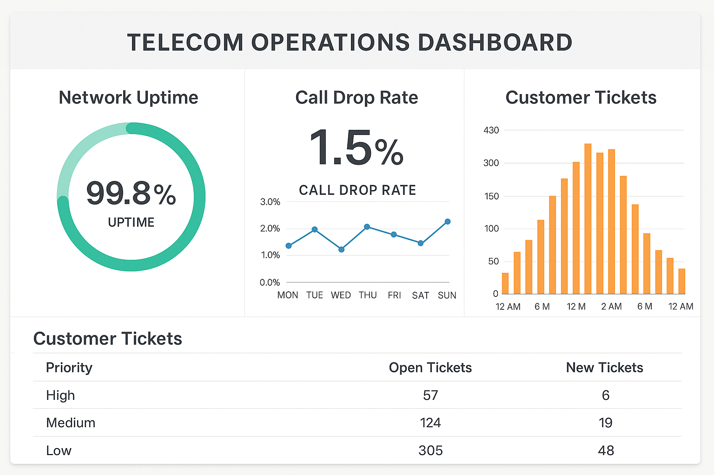
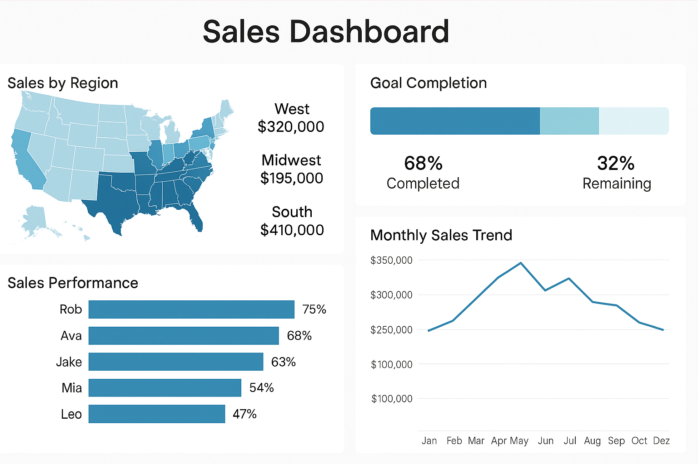
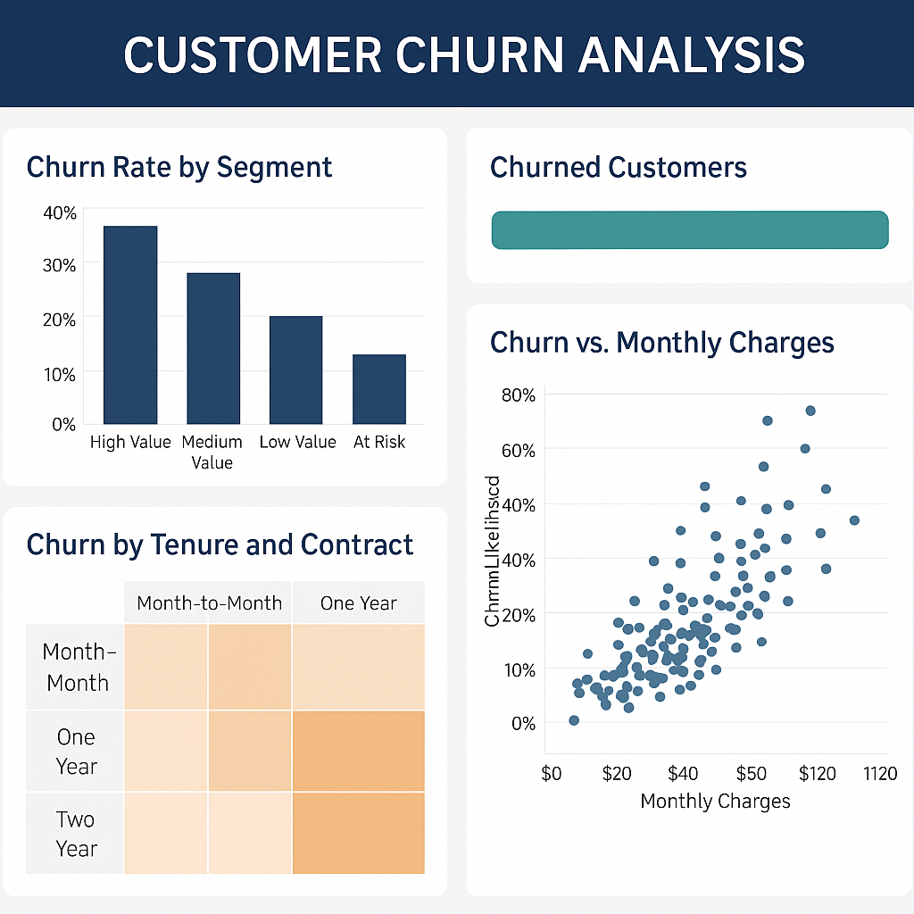
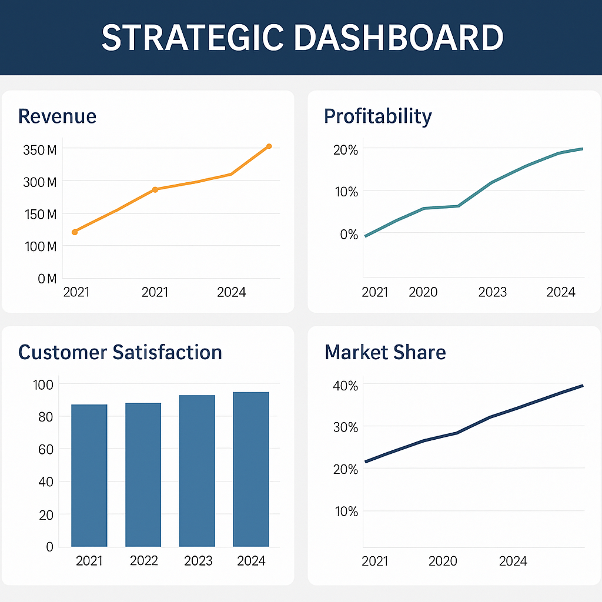
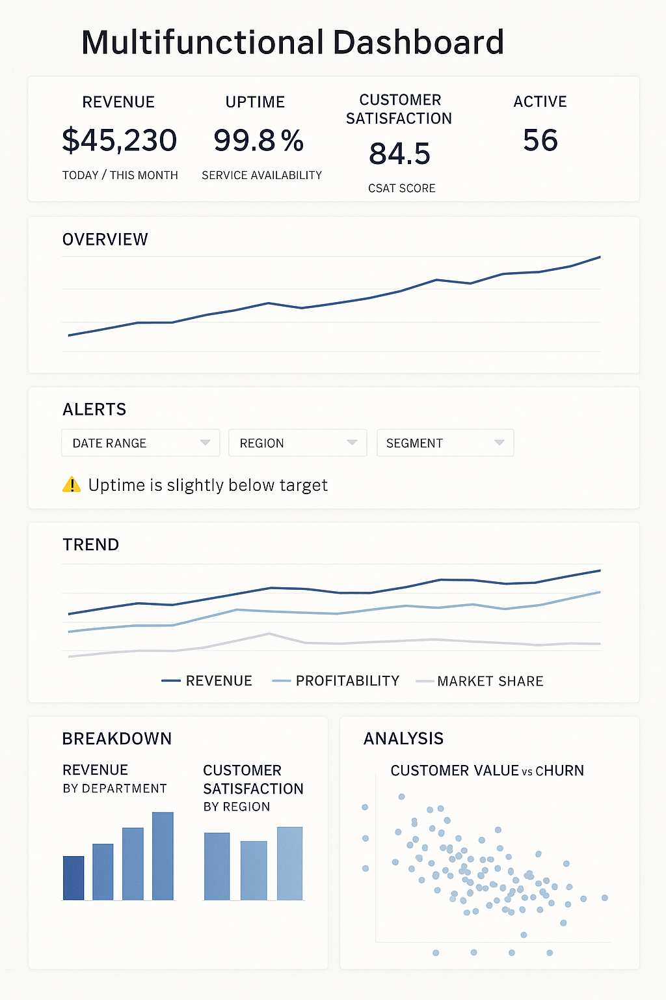

Data Analyst
Tableau
2026-08-16
Overview
This session focuses on how to design dashboards that are clear, beautiful, and performant.
Students learn the foundations of visual storytelling, color theory, UX principles, dashboard layout, and types of dashboards used in organizations.
By the end of the class, you should be able to design dashboards that tell a clear story, apply color and layout intentionally, choose the right dashboard type for your audience, and optimize performance for a smooth user experience.
This week covers:
- Visual storytelling principles
- Color theory fundamentals
- UX principles for dashboard design
- Dashboard layout best practices
- Types of dashboards (Operational, Tactical, Analytical, Strategic, Multifunctional / Self-Service)
- Interactive dashboards (Filters, Parameters, Highlights, Actions)
- Performance optimization (reduce extract size, optimize calculations, minimize load time)
Task: Build an end-to-end business dashboard that:
- Uses consistent layout and color
- Includes filters, parameters, and highlights
- Uses actions (filter, highlight, URL, sheet swapping) to guide the story
Visual Storytelling Principles
The Role of Edward Tufte in Visual Storytelling
In the field of visual storytelling, Edward R. Tufte plays a foundational role.
His work connects data, design, and narrative, showing how information can be communicated not only clearly but also elegantly.
Tufte’s philosophy encourages designers and analysts to transform raw data into visual stories that inform and move audiences.
“Above all else, show the data.”
Who is Edward Tufte?
Edward R. Tufte is an American statistician, artist, and former Yale professor, often called the father of data visualization.
He argues that visual storytelling should combine:
- Truth – no distortion of data
- Clarity – no unnecessary complexity
- Design integrity – every element has a purpose
His most influential books include:
- The Visual Display of Quantitative Information
- Envisioning Information
- Beautiful Evidence
Tufte’s principles are not about decoration but purposeful simplicity — every mark, color, or shape should tell part of the story.
1️⃣ Storytelling with Data: Minard’s Map of the 1812 Russian Campaign

Minard’s Map
Charles Joseph Minard’s famous visualization tells the tragic story of Napoleon’s march to Moscow:
- The width of the band represents the army size at each stage.
- The path shows geographic direction.
- The line below shows temperatures during the retreat.
Together, these layers merge six variables into one coherent narrative.
Why it matters:
- Shows that data can convey emotion and consequence, not just numbers.
- Embodies Tufte’s core message: “Above all else, show the data.”
- Demonstrates clarity, precision, and storytelling depth.
Storytelling takeaway:
A single visual can tell a complete story — if every element is meaningful.
2️⃣ Avoid “Chartjunk” — Keep the Story Clear

Chartjunk Example
Chartjunk refers to unnecessary decorative elements (3D effects, clip art, heavy borders, textures) that do not add information.
Why it matters:
- Visual noise hides the message; simplicity reveals it.
Guideline:
Every pixel, line, and color must serve the story, not style.
3️⃣ Maximize the Data-Ink Ratio — Tell More with Less

Data-Ink Ratio Example
The data-ink ratio describes how much of the ink in a chart actually represents data (instead of decoration).
Storytelling principle:
- When visuals are simplified, the message becomes more powerful.
Practical rules:
- Remove redundant labels and borders.
- Use subtle gridlines or remove them if they don’t help.
- Highlight only what matters (e.g., key lines, outliers).
4️⃣ Small Multiples — Comparing Stories Side by Side

Small Multiples Example
Small multiples are sets of similar charts that share the same scale and layout.
Why they work:
- Make it easy to compare patterns across time, regions, or segments.
- Encourage exploration without overwhelming the viewer.
Storytelling takeaway:
Use repetition and consistent design to show change and contrast across multiple views.
5️⃣ Graphical Integrity — Be Honest in Your Story

Lie Factor Example
A visualization must not distort the data.
Key practices:
- Keep proportions true to values (no misleading scaling).
- Avoid truncated axes that exaggerate small differences (especially on bar charts).
- Represent differences accurately in height, length, and area.
Storytelling takeaway:
Integrity builds credibility — the story must be as honest as the data.
Tufte’s Mindset in Dashboard Design
- Focus on the narrative: Highlight insights, not decoration.
- Simplify: Remove any element that doesn’t support the story.
- Use comparison wisely: Small multiples are powerful for showing change.
- Be truthful: Avoid distortion in axes, scales, and annotations.
- Layer context: Use time, geography, and value together when they clarify the story (like Minard’s map).
Color Theory Fundamentals
Color is Deceptive

Color is Deceptive
Color perception is context-dependent:
- The same color may appear lighter/darker depending on its background.
- Lighting, screen quality, and surrounding colors influence perception.
When designing dashboard palettes, always consider:
- Context (background, other visuals)
- Audience (accessibility, color vision)
- Goal of the visualization (highlight vs neutral tone)
Understanding the Color Wheel
The color wheel is a tool for understanding relationships between colors and building harmonious palettes.
It organizes:
- Primary colors – red, blue, yellow
- Secondary colors – green, orange, purple
- Tertiary colors – combinations of primary + neighboring secondary (e.g., blue-green)

Color wheel
You can experiment with palettes using tools like the Adobe Color Wheel.
Primary, Secondary, and Tertiary Colors
- Primary colors: Basic building blocks; cannot be created by mixing (red, blue, yellow).
- Secondary colors: Mixes of two primaries (green, orange, purple).
- Tertiary colors: Primary + neighboring secondary (yellow-orange, blue-green, red-purple).
Tertiary colors give more nuance and flexibility in dashboard palettes.
Color Harmony Schemes for Dashboards
Understanding color relationships helps you create balanced, readable dashboards.
Monochromatic Scheme
- Variations of a single hue (tints, shades, tones).
- Very cohesive, calm, and professional.
- Ideal for minimalist dashboards and background colors.
Analogous Scheme
- Uses colors next to each other on the wheel.
- Creates smooth, natural transitions.
- Works well for gradients or multi-series charts with subtle differences.
Complementary Scheme
- Colors opposite each other on the wheel.
- High contrast and strong visual energy.
- Great for highlighting key metrics or “good vs bad” signals.
Compound Scheme
- Mix of two or more non-adjacent colors.
- Often forms a rectangle or square on the color wheel.
- Balances variety and harmony.
Tetradic Scheme
- Uses four colors evenly spaced on the wheel.
- Very vibrant and expressive.
- Should be used carefully to avoid visual overload.
Additional Useful Schemes
Split-Complementary Scheme
- One base color + the two neighbors of its complement.
- Keeps high contrast but is less aggressive than a pure complementary scheme.
Neutral Scheme
- Focuses on grays, whites, blacks, and muted tones.
- Perfect for analytic dashboards where data, not color, is the hero.
Warm vs Cool Palettes
- Warm colors (red, orange, yellow) → energy, urgency, attention.
- Cool colors (blue, green, purple) → calm, trust, stability.
Use warm colors to highlight, cool colors as the baseline.
Design Principles for Color in Dashboards
Effective dashboards combine color harmony, functionality, readability, consistency, and accessibility.
Color Harmony
Choose colors that work well together and reflect the brand or context.
Limit the number of hues; vary intensity instead.
Functionality
Color should:
- Guide attention
- Signal status (e.g., red vs green)
- Help group related elements
Every color should have a clear role.
Readability
Use color to support comprehension, not to decorate.
Semantic example:
- Green → growth, success, “good”
- Red → decline, risk, “bad”
Simplicity Through Consistency
- Reuse the same colors for the same concepts across dashboards.
- Too many colors reduce clarity and create cognitive overload.
Accessibility
Design for users with color vision deficiencies:
- Do not rely on color alone to encode information.
- Ensure strong contrast between foreground and background.
- Test palettes with tools like Coblis.
UX Principles for Dashboard Design
This section summarizes 7 key UX principles for effective dashboards.
1. User-Centricity
Design for specific users and use cases, not for “everyone”.
Ask:
- Who is my audience? (role, data literacy, time)
- What decisions will they make with this dashboard?
- Do they need a quick overview, detailed analysis, or both?
Analysts may want detail and complexity; executives prefer clarity and summaries.
2. Usefulness
A dashboard is only valuable if it supports real decisions or tasks.
Ask:
- Is this dashboard truly needed?
- Does it replace or improve existing workflows (Excel decks, manual reports)?
- Which questions does it answer?
Avoid “dashboard for the sake of dashboard”.
3. Credibility
Users must trust your dashboard.
- Validate data sources.
- Show time stamps or update frequency.
- Avoid misleading charts and titles.
Use zero baselines on bar charts
Label key values directly
Avoid showing only cumulative numbers when rates matter

Credibility Example
4. Consistency
Consistency makes dashboards predictable and intuitive.
Types:
- Visual: Same colors, fonts, line styles.
- Functional: Interactions (clicks, hovers) behave similarly.
- Naming: Metrics and categories are named consistently.
- Contextual: Align with brand guidelines.

Consistency Example
5. Clarity
Less is more.
Use Tufte’s data-ink ratio:
- Remove decorative elements and clutter.
- Keep text short and direct.
- Emphasize the most important metrics first.

Clarity Example
6. Hierarchy
Visual hierarchy guides the eye through the dashboard.
Use:
- Position (top-left is most prominent)
- Size (big = important)
- Contrast (bold vs subtle)
- Grouping (containers, white space)
Squint test: If you squint and still see the main message, your hierarchy works.
7. Accessibility
Make dashboards usable for everyone:
- Use clear fonts (10–12 pt+).
- Keep layouts simple.
- Don’t rely solely on tooltips or hover for important info.
- Test contrast and color palettes.
Resource: Dataviz Design Checklist
Dashboard Layout Best Practices
Using Layout Containers in Tableau
Containers help you organize and align content.
Types:
- Horizontal containers – arrange elements side by side.
- Vertical containers – stack elements top to bottom.
1. Adding a Layout Container
- Drag a Vertical Container from the Dashboard pane onto the canvas.
- You may hold Shift to make it floating and position it manually.
- Use a light background color to see boundaries while designing.
2. Container Structure
- Single-level containers hold several elements directly.
- Nested containers allow complex layouts (e.g., two charts on the left, one tall chart on the right).
3. Adding Elements
- Start with Blank objects to design the grid.
- Then drag worksheets, text, and images into those positions.
4. Orientation
- Dropping items on the left/right edge → horizontal arrangement.
- Dropping items on the top/bottom edge → vertical arrangement.
5. Fitting Visualizations
- Use Fit Entire View to ensure charts adapt to container size.
- Use Fixed Width/Height for consistent sizing.
- Distribute content evenly when you want equal column/row sizes.
| Fit Entire View |
Fixed Width/Height |
Distribute Content |
6. Padding
- Inner padding: space between the container edge and content (breathing room).
- Outer padding: space between the container and other objects (spacing and hierarchy).
7. Scaling Options
- Fixed size: same size everywhere (best for presentations).
- Range: flexible within min–max bounds (for laptops/desktops).
- Automatic: fills available space (great for responsive dashboards, but test carefully).
Scrollable dashboards are especially helpful for multifunctional or analytic views with many sections.
To create:
- Use a fixed height smaller than the content height (e.g., dashboard 900px tall, content 1600px).
- Place content inside a vertical container — Tableau will add a vertical scroll bar.
- Keep key KPIs near the top; use section titles as anchors.
- Avoid multiple nested scroll areas.
Types of Dashboards
Following Stephen Few, we classify dashboards by function:
- Operational
- Tactical
- Analytical
- Strategic
- Multifunctional / Self-Service
Each serves a different decision-making level.
1. Operational Dashboards
Question: “What is happening right now?”
- Purpose: Monitor day-to-day operations and detect issues as they occur.
- Audience: Frontline staff, operations teams, call center supervisors.
- Example: Telecom operations dashboard with uptime, call drop rate, open tickets.
Common visuals:
- KPI cards with thresholds
- Gauges / bullet charts
- Real-time tables and alerts

Operational Dashboard
2. Tactical Dashboards
Question: “How are we performing against our goals?”
- Purpose: Track short- and mid-term performance vs targets.
- Audience: Team leads, department heads, project managers.
- Example: Sales dashboard tracking regional results vs monthly targets.
Common visuals:
- Variance-to-target bars
- Trend lines by month/quarter
- Progress bars by region/team

Tactical Dashboard
3. Analytical Dashboards
Question: “Why is this happening?”
- Purpose: Explore data deeply, detect patterns, and understand root causes.
- Audience: Data analysts, BI teams, advanced users.
- Example: Churn dashboard showing which segments are at higher risk and why.
Common visuals:
- Heatmaps
- Scatter plots
- Cohort charts
- Drillable tables

Analytical Dashboard
4. Strategic Dashboards
Question: “Where are we heading?”
- Purpose: Provide a high-level view of organizational performance and strategy.
- Audience: Executives, directors, board members.
- Example: Executive dashboard with revenue, profitability, market share, and satisfaction over time.
Common visuals:
- KPI scorecards
- Trend lines & forecasts
- High-level maps and summaries

Strategic Dashboard
5. Multifunctional Dashboards
Some dashboards combine elements from several types.
Purpose: Allow users to access multiple levels of insight in one place.
Example:
- Top section → Overview (strategic KPIs + operational health).
- Lower sections → Detailed analysis (trends, breakdowns, drill-downs).
💡 Best practice: design these as scrollable dashboards with clear sections.

Multifunctional Dashboard
Dashboard Type Summary
| Operational |
What’s happening now? |
Frontline teams |
Real-time |
Efficiency |
Average handling time |
| Tactical |
Are we meeting our goals? |
Managers |
Weekly / Monthly |
Performance |
Sales vs target |
| Analytical |
Why is this happening? |
Analysts |
On-demand |
Insight & causes |
Churn drivers |
| Strategic |
Where are we heading? |
Executives |
Monthly / Quarterly |
Outcomes |
Revenue growth |
Reflection and Discussion
- Which dashboard type do you use most often in your current work or study?
- Where do you see chartjunk or poor color use in real dashboards around you?
- How could you redesign one of your own dashboards using Tufte’s principles and color harmony?
Take notes or share examples in class.
Week 4 Assignment – End-to-End Business Dashboard
Build a business dashboard in Tableau that:
- Uses one clear narrative (e.g., “Sales performance”, “Network health”, “Customer churn”).
- Includes at least three sheets (e.g., KPI view, trend view, breakdown view).
- Applies color theory (choose a scheme and document it briefly).
- Implements at least two interactive elements:
- Filters / quick filters
- Parameters
- Highlight or filter actions
- URL or sheet-swap actions
- Demonstrates good layout and hierarchy using containers and padding.
- Includes a short story caption (2–3 sentences) summarizing the main insight.
Optional: publish to Tableau Public and share the link in the course chat..